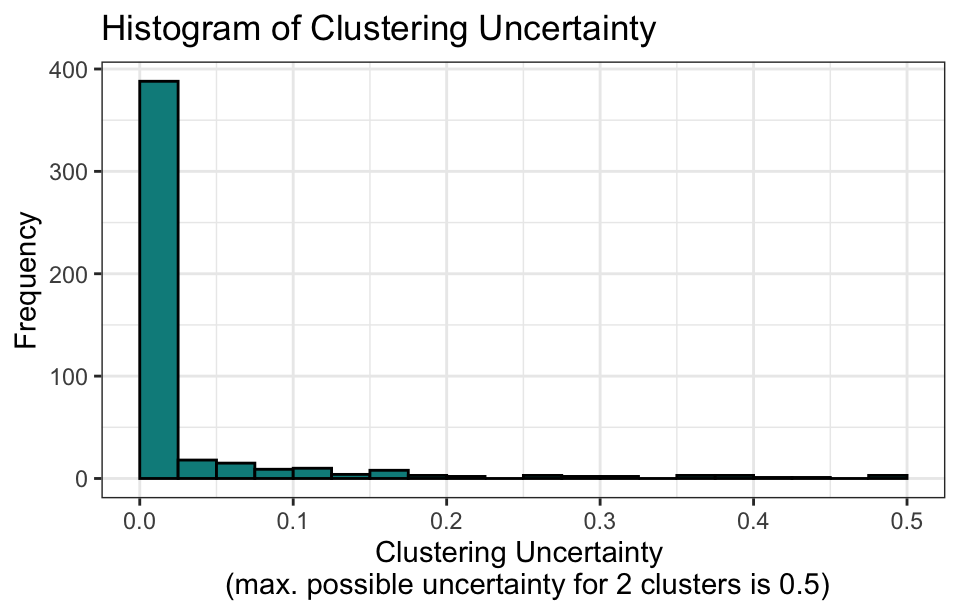

library(tidyverse)
library(dendextend)
library(factoextra)
library(clustMixType)
library(cluster)
library(clustMD)
library(FactoMineR)22 Cluster analysis
Cluster analysis is a statistical method used to group objects, observations, or data points into clusters or groups based on their similarity or proximity to one another. It is a form of unsupervised learning, meaning there are no predefined labels or categories for the data.
22.1 Prerequisite
22.2 Overview
The goal of cluster analysis is to maximize the similarity of objects within the same group (intra-group similarity) while maximizing the differences between groups (inter-group dissimilarity).
22.2.1 Similarity metrics
Similarity metrics are crucial for cluster analysis, as they help determine how similar or different patients, diseases, or clinical observations are from one another. These metrics are essential when grouping patients with similar characteristics, symptoms, or responses to treatments. Different types of data (continuous, categorical, binary) require different similarity metrics.
Euclidean distance
d(x, y) = \sqrt{\sum_{i=1}^{n} (x_i - y_i)^2}
It measures the straight-line distance between two points in a multidimensional space. It is one of the simplest and most commonly used metrics for continuous data, such as blood pressure, heart rate, or lab test values.
Manhattan distance
d(x, y) = \sum_{i=1}^{n} |x_i - y_i|
Itmeasures the absolute distance between two points along each dimension (or feature). It sums the absolute differences between corresponding coordinates.
Minkowski distance
d(x, y) = \left( \sum_{i=1}^{n} |x_i - y_i|^r \right)^{1/r}
This is a generalization of both Euclidean and Manhattan distances, allowing for flexible comparison based on the value of r. For r = 1, it is Manhattan distance; for r = 2, it becomes Euclidean distance. It is useful in clinical clustering where different levels of sensitivity to distance are required.
Cosine similarity
\text{similarity} = \text{cos}\theta_{ij} = \frac{\sum_{i=1}^{n} x_i y_i}{\sqrt{\sum_{i=1}^{n} x_i^2} \sqrt{\sum_{i=1}^{n} y_i^2}}
It measures the cosine of the angle between two vectors, often used in text data of medical records or high-dimensional gene expression data, where the magnitude (scale) of variables is less important than their direction (pattern)
Mahalanobis distance
d(x, y) = \sqrt{(x_i - y_i)^T S^{-1} (x_i - y_i)}
where S is the covariance matrix. It takes into account the correlation between variables.It is often used in multivariate data such as laboratory results or clinical trial data where correlations between clinical measures exist (e.g., blood pressure, heart rate).
Gower’s distance
D_{ij} = \frac{1}{n} \sum_{k=1}^{n} d_{ijk}
where d_{ijk} is the normalized distance for the k-th variable. It is specifically designed for datasets with mixed data types. It calculates a dissimilarity measure that can combine continuous, categorical, and binary variables.
Jaccard similarity
J(x, y) = \frac{|x \cap y|}{|x \cup y|}
It is commonly used for binary or categorical data, such as the presence or absence of symptoms, genetic markers, or disease diagnoses.
Hamming distance
d(x, y) = \sum_{i=1}^{n} \delta(x_i, y_i)
where \delta(x_i, y_i) is 1 if x_i \neq y_i, and 0 otherwise. Hamming distance counts the number of positions at which the corresponding elements of two strings are different. It is used in clustering genetic sequences or binary data such as mutation profiles, or yes/no responses in questionnaires. It is effective for measuring differences in binary or categorical data.
Pearson correlation
d(x, y) = 1 - \frac{(x - \bar{x}) \cdot (y - \bar{y})}{\sqrt{(x - \bar{x})^2} \sqrt{(y - \bar{y})^2}}
It is used for continuous data where the correlation between variables is of interest. A possible use is clustering patients based on correlated time-series data (e.g., progression of disease markers over time).
22.2.2 Types of clustering methods
Hierarchical clustering
Hierarchical clustering is a method of cluster analysis that seeks to build a hierarchy of clusters by successively merging (agglomerative approach) or splitting (divisive approach) data points. In hierarchical clustering, clusters are organized into a tree-like structure called a dendrogram, which visually represents the data’s hierarchy of nested clusters. There are two approaches:
Agglomerative clustering (bottom-up)
Each observation starts as its own cluster, and clusters are merged iteratively based on their similarity.
Divisive clustering (top-down):
All observations start in one cluster, and the cluster is split iteratively until each observation is in its own cluster.
Partitioning clustering
Partitioning clustering divides data points into a predefined number of clusters, where each data point belongs to exactly one cluster. The goal is to partition the dataset into clusters such that data points within a cluster are more similar to each other than to those in other clusters. Common methods include:
K-means clustering
This method partitions the data into k clusters, where k is specified by the user. Each data point is assigned to the nearest cluster center.
K-medoids clustering
Iti is similar to K-means but uses actual data points (medoids) as cluster centers, making it more robust to outliers.
CLARA (clustering large applications)
An extension of K-medoids that works for large datasets by using samples of the data to reduce computation time.
22.3 Hierarchical clustering
Hierarchical clustering (also referred to as systematic clustering) is a method used to build a hierarchy of clusters, which can be visualized as a tree. The aim is to merge similar objects in a stepwise manner, creating nested clusters of increasing size.
22.3.1 Linkage criterion
The method of merging clusters depends on the linkage criterion, which defines how the distance between clusters is calculated. The commonly used link criterions are as follows:
- Single linkage: Distance between the closest points of two clusters (minimum distance).
- Complete linkage: Distance between the farthest points of two clusters (maximum distance).
- Average linkage: Average distance between all points in one cluster to all points in another.
- Centroid linkage: Distance between the centroids (mean points) of two clusters.
- Ward’s method: Commonly applied in agglomerative hierarchical clustering to minimize the total within-cluster variance.
22.3.2 Key steps
- Calculate similarity matrix: A matrix of pairwise distances between all objects is computed based on the chosen distance metric (e.g., Euclidean distance).
- Merge clusters: At each iteration, the two clusters with the smallest distance are merged based on the selected linkage criterion (e.g., single linkage).
- Repeat: The merging process is repeated until all objects are in a single cluster or until the desired number of clusters is obtained.
- Visualize with a Dendrogram: The clustering process can be represented by a dendrogram, where the height of the branches represents the distance at which clusters are merged.
Example 1:
A institution collected the data of 7 indicators for medical and health services in 31 regions of China in 2007. Please use hierarchical cluster method to analyze both the 31 regions and the 7 indicators separately.
df <- read_csv("datasets/ex22-01.csv", show_col_types = F) |>
column_to_rownames("Region")Since the indicators might have different units, it’s a good practice to normalize them so that all variables contribute equally to the clustering process.
df_norm <- scale(df)You can perform hierarchical clustering using the hclust() function, along with dist() to compute similarities.
hc_regions <- df_norm |>
dist(method = "euclidean") |>
hclust(method = "ward.D2")
hc_indicators <- df_norm |>
t() |>
dist(method = "euclidean") |>
hclust(method = "ward.D2")- 1
- Compute similarity matrix for regions
- 2
- Hierarchical clustering for regions
- 3
- Compute similarity matrix for indicators (transpose data)
- 4
- Hierarchical clustering for indicators
You can visualize the hierarchical clustering using dendrograms to observe how the regions or indicators are clustered.
hc_regions |>
as.dendrogram() |>
set("branches_k_color") |>
set("branches_lty", c(1, 1, 3, 1, 1, 2)) |>
set("labels_colors", c("red", "orange", "black", "blue", "purple")) |>
set("labels_cex", c(.75, .75)) |>
plot(axes = F)
rect.hclust(hc_regions, k = 6)
hc_indicators |>
as.dendrogram() |>
set("branches_k_color", k = 4) |>
set("branches_lty", c(1, 2, 3, 4, 5)) |>
set("labels_colors", k = 4) |>
set("labels_cex", c(.75, .75)) |>
plot(axes = F)
rect.hclust(hc_indicators, k = 3)- 1
-
The
set()function is from thedendextendpackage. - 2
- Draws rectangles around the branches of a dendrogram highlighting the corresponding clusters.

If you want to cut the dendrogram at a certain height to define clusters, use cutree().
cutree(hc_indicators, k = 3)#> X1 X2 X3 X4 X5 X6 X7
#> 1 2 3 3 2 3 122.4 K-means clustering
K-means clustering aims to partition the dataset into k distinct, non-overlapping groups (clusters), where each data point belongs to the cluster with the nearest mean. The algorithm iteratively refines the positions of cluster centroids until convergence.
22.4.1 Key steps
- Choose the number of clusters k.
- Randomly initialize k centroids.
- Assign each data point to the nearest centroid.
- Recalculate the centroids based on the assigned points.
- Repeat the steps until the centroids stabilize or the change in centroids is minimal.
K-means clustering is efficient for large datasets when k is known, and can provide interpretable results with clear clusters. But the limitation is that you need to define the number of clusters k beforehand, which may not always be intuitive. This method is best for numeric data and may not work well with categorical or mixed-type data without modifications.
Example 2:
A team measured the scores of 5 cognitive and behavioral scales in 219 elderly individuals aged 65 and above. Use the K-means clustering method to classify the 219 elderly individuals.
df <- read_csv("datasets/ex22-02.csv", show_col_types = F) |>
column_to_rownames("ID")It’s a good practice to standardize the data before clustering, especially if the variables have different units. You can use the scale() function to do this:
df_norm <- scale(df)Use the kmeans() function to apply the K-means clustering algorithm. For example, you can set the number of clusters to 4:
set.seed(200) # Set seed for reproducibility
kmeans_rlt <- kmeans(
df_norm, centers = 4, nstart = 20, algorithm = "MacQueen", iter.max = 100)You can visualize the clustering result using the fviz_cluster() function from the factoextra package:
fviz_cluster(
kmeans_rlt, data = df_norm, geom = "point", pointsize = 1.2,
main = "K-means clustering", xlab = F, ylab = F, legend.title = "") +
theme(
plot.title = element_text(size = 10),
axis.text = element_text(size = 9),
legend.text = element_text(size = 9),
legend.key.size = unit(0.35, "cm")
)You can use the elbow method to determine the optimal number of clusters. The fviz_nbclust() function helps visualize this:
fviz_nbclust(df_norm, kmeans, method = "silhouette", k.max = 15) +
theme(
axis.title = element_text(size = 10), # Axis titles
axis.text = element_text(size = 9), # Axis text
plot.title = element_text(size = 10) # Plot title size
)This will generate a plot showing the within-cluster sum of squares (WSS) for different numbers of clusters, with the “elbow point” often indicating the best choice.
NbClust() is another useful function in NbClust package for determining the optimal number of clusters for a dataset. It provides multiple methods for cluster validation and automatically suggests the best number of clusters by using different criteria.
set.seed(200)
nbclust <- NbClust::NbClust(df_norm, distance = "euclidean", method = "kmeans")#> *** : The Hubert index is a graphical method of determining the number of clusters.
#> In the plot of Hubert index, we seek a significant knee that corresponds to a
#> significant increase of the value of the measure i.e the significant peak in Hubert
#> index second differences plot.
#> #> *** : The D index is a graphical method of determining the number of clusters.
#> In the plot of D index, we seek a significant knee (the significant peak in Dindex
#> second differences plot) that corresponds to a significant increase of the value of
#> the measure.
#>
#> *******************************************************************
#> * Among all indices:
#> * 10 proposed 2 as the best number of clusters
#> * 5 proposed 3 as the best number of clusters
#> * 3 proposed 4 as the best number of clusters
#> * 1 proposed 5 as the best number of clusters
#> * 1 proposed 8 as the best number of clusters
#> * 1 proposed 11 as the best number of clusters
#> * 1 proposed 12 as the best number of clusters
#> * 2 proposed 15 as the best number of clusters
#>
#> ***** Conclusion *****
#>
#> * According to the majority rule, the best number of clusters is 2
#>
#>
#> *******************************************************************22.5 Mixed-type data
Mixed-type data clustering refers to the clustering of datasets that contain both numerical (continuous) and categorical (discrete) variables. These datasets are common in real-world applications. Standard clustering methods like k-means are designed for numerical data, so when dealing with mixed-type data, special techniques are required. Here are common approaches and methods for clustering mixed-type data:
22.5.1 K-prototypes clustering
The K-prototypes algorithm is a direct extension of the K-means algorithm, but it can handle mixed-type data by treating numerical and categorical data separately. For numerical data, it minimizes Euclidean distances, and for categorical data, it minimizes the number of mismatches.
You can use the kproto() function from the clustMixType package to perform this kind of clustering. Here’s an example:
# Sample data with mixed types
x <- data.frame(
age = c(23, 45, 34, 28, 36, 52),
gender = as.factor(c("M", "F", "M", "F", "F", "M")),
cholesterol = c(200, 220, 210, 190, 250, 240)
)
set.seed(123) # Set seed for reproducibility
lambda <- lambdaest(x)#> Numeric variances:
#> age cholesterol
#> 114.6667 536.6667
#> Average numeric variance: 325.6667
#>
#> Heuristic for categorical variables: (method = 1)
#> gender
#> 0.5
#> Average categorical variation: 0.5
#>
#> Estimated lambda: 651.3333kp <- kproto(x, k = 2, lambda = lambda) #> # NAs in variables:
#> age gender cholesterol
#> 0 0 0
#> 0 observation(s) with NAs.summary(kp)#> age
#> Min. 1st Qu. Median Mean 3rd Qu. Max.
#> 1 23 26.75 31 32.5 36.75 45
#> 2 36 40.00 44 44.0 48.00 52
#>
#> -----------------------------------------------------------------
#> gender
#>
#> cluster F M
#> 1 0.5 0.5
#> 2 0.5 0.5
#>
#> -----------------------------------------------------------------
#> cholesterol
#> Min. 1st Qu. Median Mean 3rd Qu. Max.
#> 1 190 197.5 205 205 212.5 220
#> 2 240 242.5 245 245 247.5 250
#>
#> -----------------------------------------------------------------clprofiles(kp, x)
This function combines K-means clustering for numerical data with K-modes clustering for categorical data. You can also use the silhouette method or other approaches to determine the optimal number of clusters.
22.5.2 Gower’s distance + hierarchical clustering
Gower’s distance is a similarity measure that can handle mixed data types (numeric, ordinal, and categorical). After calculating the distance matrix, hierarchical clustering can be applied.
data(Byar)
x <- Byar |>
rename(
Size.tumor = Size.of.primary.tumour,
Serum.pacp= Serum.prostatic.acid.phosphatase,
Ecg.code = Electrocardiogram.code
) |>
mutate(
Serum.pacp = if_else(Serum.pacp == 0, mean(Serum.pacp), Serum.pacp),
Size.tumor = sqrt(Size.tumor),
Serum.pacp = log(Serum.pacp)
) |>
select(1, 2, 5, 6, 8, 9, 10, 11, 3, 4, 12, 7) |>
mutate(
Ecg.code = case_when(
Ecg.code == 0 | Ecg.code == 1 ~ 1,
Ecg.code == 2 | Ecg.code == 3 | Ecg.code == 4 ~ 2,
Ecg.code == 5 | Ecg.code == 6 ~ 3
)
) # Compute Gower's distance for mixed data
gower_dist <- daisy(
x, metric = "gower", stand = T,
type = list(numeric = c(1:8), ordered = 9, symm = c(10,11), factor = 12)
)
# Perform hierarchical clustering
hclust(gower_dist, method = "ward.D2") |>
as.dendrogram() |>
set("branches_k_color", k = 60) |>
set("branches_k_lty", k = 2) |>
plot(axes = F)22.5.3 Two-step clustering
Two-step clustering is a method designed to handle large datasets that contain both continuous and categorical variables. It is called “two-step” because the clustering process is divided into two main stages:
- Pre-clustering step: In the first step, the algorithm pre-clusters the data to reduce the computational complexity. It uses a distance measure (typically log-likelihood for mixed data types) to determine preliminary clusters. This is usually done using a hierarchical clustering method.
- Clustering step: The second step refines the initial clusters using a partitioning algorithm, such as K-means or another method suited for mixed data. This step ensures that the clusters are better separated.
Unfortunately, there isn’t a direct two-step clustering function in R, here is a customized function named two_step_clustering() to approximate it.
two_step_clustering <- function(data, n_pre_clust = 5, n_final_clust = 3, dist_method = "euclidean", seed = 123) {
set.seed(seed)
# STEP 1: Pre-Clustering using Hierarchical Clustering
# Compute the distance matrix (for mixed data, replace with Gower's distance)
distance_matrix <- dist(data, method = dist_method)
# Perform hierarchical clustering
hclust_result <- hclust(distance_matrix, method = "ward.D2")
# Create pre-clusters (cut the dendrogram into n_pre_clusters groups)
pre_clusters <- cutree(hclust_result, k = n_pre_clust)
# Add the pre-cluster information to the dataset
data_with_clusters <- data
data_with_clusters$pre_cluster <- as.factor(pre_clusters)
# STEP 2: Final Clustering using K-means
# Now, apply k-means clustering on the pre-clustered data
kmeans_result <- kmeans(data_with_clusters, centers = n_final_clust)
# Add final cluster labels to the original data
data_with_clusters$final_cluster <- as.factor(kmeans_result$cluster)
# Visualization: Final clusters (using the first two principal components)
fviz_plot <- fviz_cluster(kmeans_result, data = data, geom = "point", show.clust.cent = T, main = "Two-step clustering", xlab = F, ylab = F, legend.title = "") +
theme(
plot.title = element_text(size = 10),
axis.text = element_text(size = 9),
legend.text = element_text(size = 9),
legend.key.size = unit(0.35, "cm")
)
data_with_clusters
fviz_plot
}
# Example usage with the mtcars dataset
df <- mtcars
two_step_clustering(df)22.5.4 FAMD + clustering
Factor analysis of mixed data (FAMD) is used for dimensionality reduction of mixed-type datasets. It reduces the mixed-type data to a smaller number of dimensions that represent both numeric and categorical information. After reducing the dimensions, standard clustering techniques like K-means or hierarchical clustering can then be applied.
data(geomorphology)
x <- geomorphology
res <- FAMD(x)#> Warning: ggrepel: 43 unlabeled data points (too many overlaps). Consider
#> increasing max.overlaps# Plot FAMD result
fviz_famd_ind(res, geom = "point", xlab = F, ylab = F) +
theme(
plot.title = element_text(size = 10),
axis.text = element_text(size = 9),
legend.text = element_text(size = 9),
legend.key.size = unit(0.35, "cm")
)
# Perform k-means clustering on the FAMD results
kmeans_res <- kmeans(res$ind$coord, centers = 3)
fviz_cluster(kmeans_res, res$ind$coord, geom = "point", , xlab = F, ylab = F) +
theme(
plot.title = element_text(size = 10),
axis.text = element_text(size = 9),
legend.text = element_text(size = 9),
legend.key.size = unit(0.35, "cm")
)clustMD package
X <- Byar |>
rename(
Size.tumor = Size.of.primary.tumour,
Serum.pacp= Serum.prostatic.acid.phosphatase,
Ecg.code = Electrocardiogram.code
) |>
mutate(
Serum.pacp = if_else(Serum.pacp == 0, mean(Serum.pacp), Serum.pacp),
Size.tumor = sqrt(Size.tumor),
Serum.pacp = log(Serum.pacp)
) |>
select(1, 2, 5, 6, 8, 9, 10, 11, 3, 4, 12, 7) |>
mutate(
across(c(9:12), \(x) x + 1),
Ecg.code = case_when(
Ecg.code == 1 | Ecg.code == 2 ~ 1,
Ecg.code == 3 | Ecg.code == 4 | Ecg.code == 5 ~ 2,
Ecg.code == 6 | Ecg.code == 7 ~ 3
)
) - 1
- Transformation skewed variables
- 2
- Order variables (Continuous, ordinal, nominal)
- 3
- Start categorical variables at 1 rather than 0
- 4
- Merge categories of EKG variable for efficiency
clustMD(
X = as.matrix(X),
G = 2,
CnsIndx = 8,
OrdIndx = 11,
Nnorms = 20000,
MaxIter = 500,
model = "BD",
store.params = F,
scale = T,
startCL = "kmeans",
autoStop = T,
ma.band = 30,
stop.tol = 0.0001
) |> plot()#>
|
| | 0%
|
|======= | 10%
|
|===================================================================| 100%